每页顶部并排：左 = 反馈方原稿手机（带红点 ①②③④），右 = 我们的新界面截图位；下方是对每个红点的逐条回应——怎么改的、状态、对应提交。
PRIMARY RISK
UI 容易被读成评分、评判或比赛准备。
PRODUCT DIRECTION
把 SpeakSpark 定位成私人练习教练，不是评分者。
LAUNCH RULE
只做 coach process：prompts、frames、词汇选择、一个 next-run plan。
AVOID
完整演讲、比赛分数、排名语言、实时纠错、暴露 AI provider 报错。
更新（2026-06-18）：Supabase 后台已恢复，AI 全部跑通。已实测 gemini-proxy 返回真实内容；Takeaway 现给出基于原文的总结、温和指出一个 growth area、同义词升级与连贯的 say_this，不再用分数高低压用户。
过程中还修了一个真 bug：gemini-2.5-flash 的"思考"约吃 700–800 token，原 maxOutputTokens:1600 会把 takeaway JSON 截断 → 退本地；已调到 4000，恢复正常。
对照 7 页走查 + 5 条文字反馈：练习页 / Takeaway / 首页 / My 整体改版已上线，AI 已真跑通。2026-06-19 又补了一轮细节：Takeaway 把 Change + Next time 合并成一个可执行块，练习页 captured words 与 My history 都改成固定滚动；My history 右上角也从时间 filter 改为 calendar 视角，有练习的日期可点选。需要你拍板或支持的只有几件：① 真账号体系（auth）② 录音 + 未成年人合规 ③ 移动端语音识别选型 ④ 重新部署 gemini-proxy（让 AI 提速生效）。明细见文末「下一步 / V3」。
首屏友好，但分数/streak 会带来练习压力。
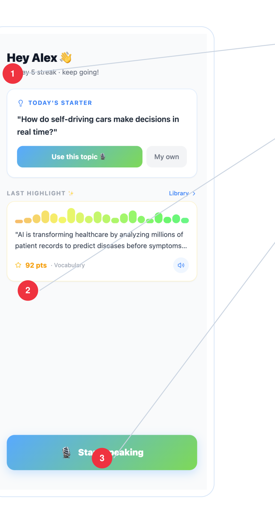
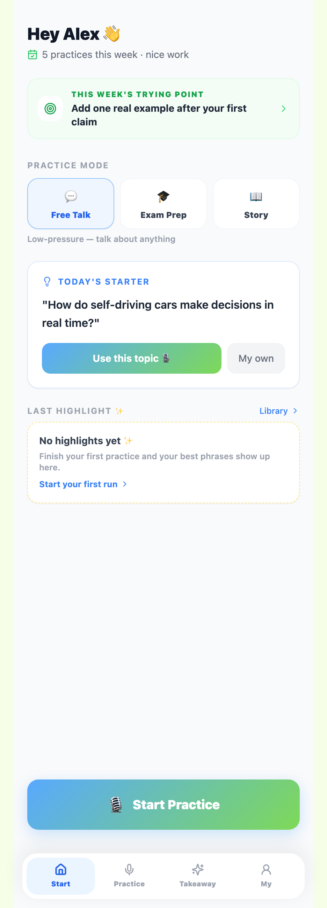
首页 V2（trying point + 模式 + 今日话题 + 去 streak/分数）· #/
我们的回应 · OUR RESPONSE （编号对应上方手机红点）
原建议：用 "5 practices this week" 代替 streak。
✅ 改为 "5 practices this week"，去掉 streak 压力。87a6cd6
原建议：换 "2 phrases saved / 1 coach note"。
✅ 去掉裸分，改为 "Phrase saved · … win" 证据。87a6cd6
原建议：测 "Start Practice"。
✅ 改为 "Start Practice"（首页 + 练习页）。87a6cd6
新用户弹 3 步引导（模式/话题/Start），只出一次。63b78d4
说话当下，界面应像冷静的教练，不是实时评分表。
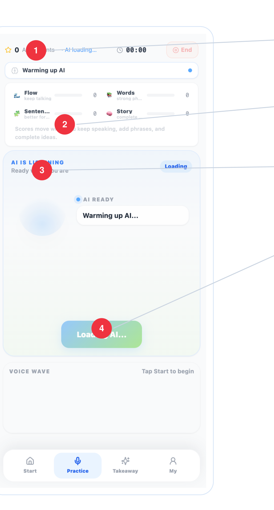
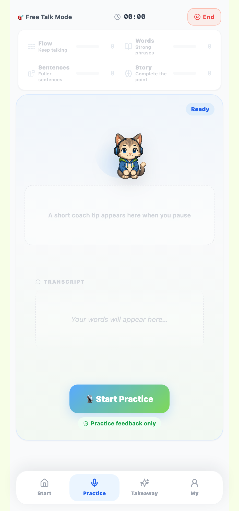
练习页 V2（KTV 未得分弱化 + 信任标签）· #/practice
我们的回应 · OUR RESPONSE （编号对应上方手机红点）
原建议：改 "coach notes" 或移除。
✅ 删掉模糊计数，换成顶部 🎯 话题/模式。f6392c9
原建议：说话中隐藏指标，结束后作 private evidence。
✅ 定调保留作鼓励框架，但未得分的指标弱化/灰掉、得分的上色、刚加分的高亮——注意力跟着分走。87a6cd6
原建议：改 "Coach is following your idea"。
✅ 改为 "Coach is following your story" + 猫状态。fa5b2c235472de
原建议：允许先录后生成。
✅ 预生成缓冲 + 多层 fallback；停顿卡优先真 AI（有缓冲秒弹，无则猫 thinking，断网才本地）。后台已恢复，真 AI 跑通。1936038
结束页第一屏应该是教练计划，不是成绩单。
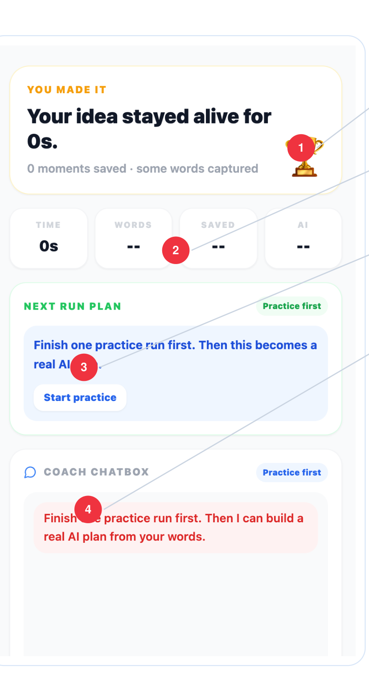
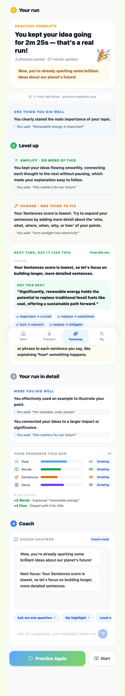
Takeaway V2（真实 AI）：① 精简鼓励 → ② Level up（Amplify + Change/Next time 合并块：改什么、怎么说、复用词、trying point）→ ③ 详情 → ④ Coach · #/session-end
我们的回应 · OUR RESPONSE （编号对应上方手机红点）
原建议：notebook/check + "Practice complete"。
✅ 改为 "Practice complete" + 🎉，无奖杯无排名。838a68b
原建议：先一句人话再谈数据。
✅ 先 人话 headline（"You kept your idea going…"）。838a68b
原建议：提为置顶 hero card。
✅ Takeaway 重排：顶部只留精简鼓励 + 1 个 quick win，Level up（含 Next Run Plan）提前为块②；并把 Change 与 Next time 合并，读法变成"一个要改的点 → 下一次直接怎么说"。见 reorder spec6e889dd
原建议：中性文案。
✅ 改为中性诚实琥珀提示（正是靠它定位到后台失效）。1936038ca2982f
Chatbox 很强大，所以它的边界要在上线前明确可见。
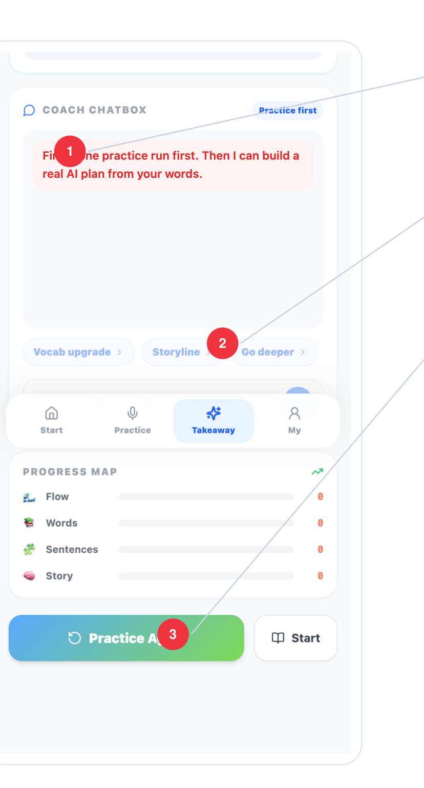
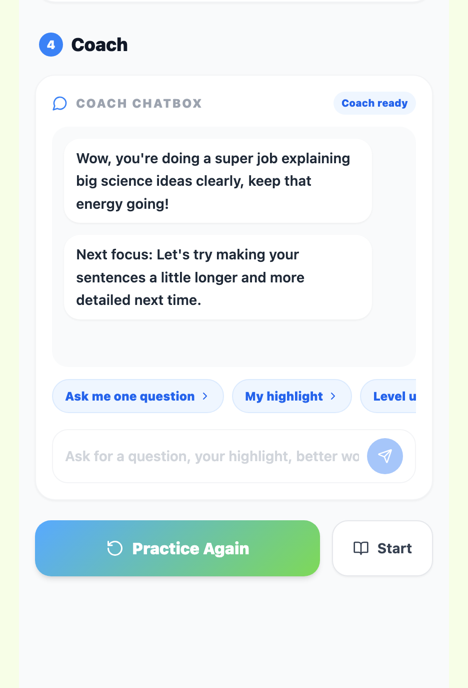
块④ Coach（真实 AI 回复）：基于本次的开场语 + "Ask me one question" 等 presets（避免代答）+ Practice Again。
我们的回应 · OUR RESPONSE （编号对应上方手机红点）
原建议："Go deeper" → "Ask me one question"。
✅ presets 改为 "Ask me one question" 等，不替你作答。fa5b2c2
原建议：用文字趋势，数字次要/隐藏。
✅ 改文字趋势（Strong/Growing/Just starting + 成长描述）。4bdaf81
✅ 保留核心循环；另加 coach-mode 持久信任标签。
成长页框架是对的，但 "Ability Portrait" 仍像评估。
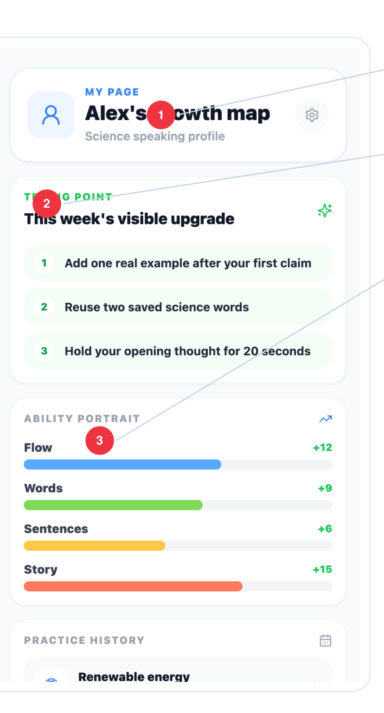
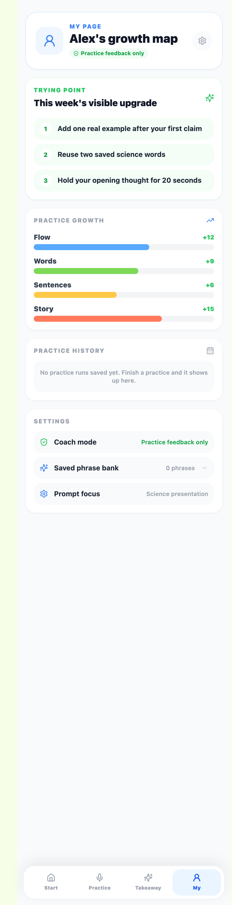
My V2 上半（Trying Point + Practice growth）· #/my
我们的回应 · OUR RESPONSE （编号对应上方手机红点）
✅ 保留个人成长语言，不做公开排名。
原建议：推广到全 app。
✅ 已推广闭环：共享源 + 首页本周 trying point 卡（点击进练习）+ My 列表 + 结束页 "Your next trying point"。
原建议：改名 "Practice growth"。
✅ 已改名 "Practice growth"。87a6cd6
设置页应让"内容安全边界"对家长/老师/学生都好理解。
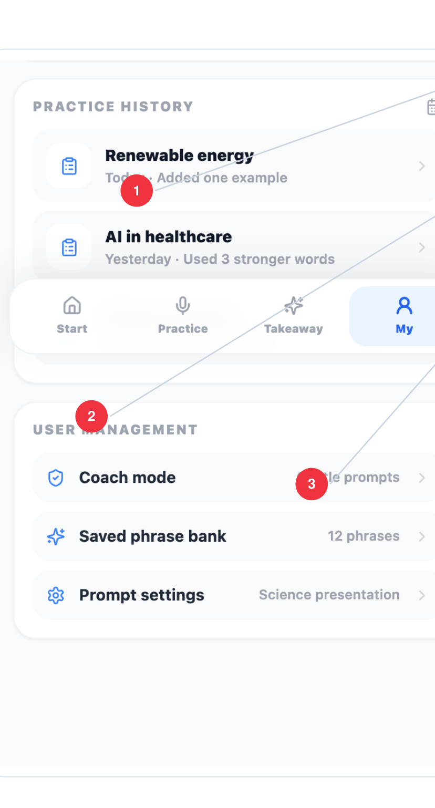
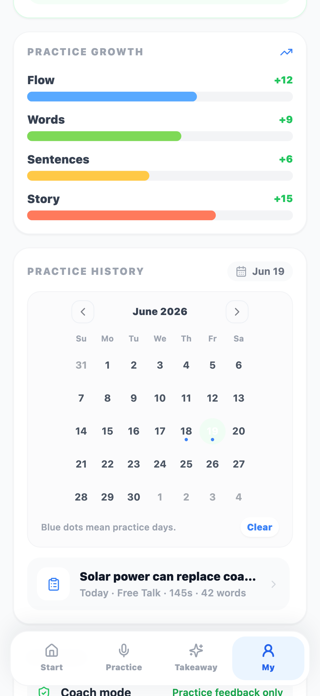
My V2 下半：历史右上角是日历视角（有练习的日期带蓝点，点日期后下面只列当天练习），且列表固定高度滚动，不再无限长 · Settings 真实化（Coach mode 信息行 · 真实短语库 · 可编辑 Coaching prompt）· #/my
我们的回应 · OUR RESPONSE （编号对应上方手机红点）
✅ history 聚焦练习动作（"Added one example…"），并改为固定高度滚动区；右上角打开 calendar，有练习的日期带蓝点，点一天后下方只显示当天记录。6e889dd本次更新
原建议：改名 "Settings"。
✅ 已改名 "Settings"。87a6cd6
原建议："Gentle prompts" → "Practice feedback only"。
✅ 改为 "Practice feedback only"；信任标签也推广到练习页 + My 头部。87a6cd6
走查 PDF 之外的试用文字反馈，多数落在练习页/首页，已与上面联动实现。
原问题
多行字幕信息过载；噪音环境 End 按钮被挤无法点。
我们怎么改
提词器式字幕：当前句锁中间、旧句上滚淡出、固定高度；End 固定顶栏不随字幕移动。
原问题
音浪+字幕+气泡+KTV+卡片，动态元素太多分心。
我们怎么改
砍掉 40 柱音浪大动效；猫只画猫；重复 listening 文案合并到单一固定槽位。
原问题
冷启动忘话题、说着说着断线，科学话题本就不熟。
我们怎么改
顶部常驻 🎯 话题/模式；冷启动关键词标签，讲到哪个自动变绿。
原问题
建议和实际说的内容脱节，看不到"因为我说了 X 所以建议 Y"。
我们怎么改
先"讲了什么"→ 再建议；每条带 "You said: …" 引用。重构为 3 大块长页；最新版本把 Change + Next time 合并，并要求具体句式/词/例子，不讲"最低分"。
原问题
首页是仪表盘，缺"接下来该练什么"的引导。
我们怎么改
用练习模式选择（Free Talk/Exam/Story）+ 今日话题 Starter 覆盖"练什么"。曾加的独立"主题活动卡片区"与这两者重复，已移除避免冗余。如需独立主题入口可再单开。
这一阶段已落地、可演示的功能（后台已恢复，AI 相关均出真实内容）。
现状：没有登录系统（"Alex" 是写死的 mock），历史 / 短语 / prompt 偏好都只存在本机 localStorage（换设备、清缓存即丢，且不绑定到任何用户）。要做"和用户绑定 + 跨设备 + 录音回放"，需要后端。
要存什么（按用户 / 按 session）
| 数据 | 现在 | 是否需要后端 |
|---|---|---|
| 用户账号（who，admin） | mock "Alex" | 需 Auth 登录 — 一切的锚点 |
| 练习 session（时间/模式/时长/分数） | localStorage，单设备 | 需 sessions 表（按 user） |
| Transcript（你说了什么） | 存在 session 里（本机） | 随 session 存后端 |
| 音频录音 | 不录、不存 | 需录音 + Supabase Storage（音频桶），关联 session |
| 历史 coach（每次的 AI 问答 / takeaway） | 每次重生成、不保存 | 按 session 存，才能回看 |
| 短语库 / trying point / prompt 偏好 | 本机推导/存储 | 按 user 存（跨设备） |
| 前端界面 / 交互 | 已完成 | 不需后端 |
用户 admin 与多 session 怎么分
一切以 user_id（来自登录）为根：每个用户只看到自己的数据（行级权限 RLS）。每次练习 = 一条 sessions 行（id · user_id · 时间 · 模式 · 时长 · 分数 · transcript · audio_path），其下挂 highlights、coach_messages（外键 session_id）。所谓"用户 admin" = 现在缺失的登录/账号层。
决策项（请团队拍板）
Supabase 后台已恢复，AI（实时教练 / takeaway 总结 / Coach 问答）已跑通可演示。上面的存储 / 账号 / 录音项是"要不要更进一步绑定用户、做跨设备"的决策，与当前可用性无关。详细操作见单独的 User Guidance。
持续迭代中。按优先级排，逐步推进。
user_id + RLS；sessions/highlights/coach_messages 入库（替 localStorage）。一切跨设备/绑定用户的前提。analyze-voice 雏形）或接第三方（Deepgram/Whisper）。gemini-proxy：让"实时调用关 thinking 提速"真正生效（代码已就绪）。